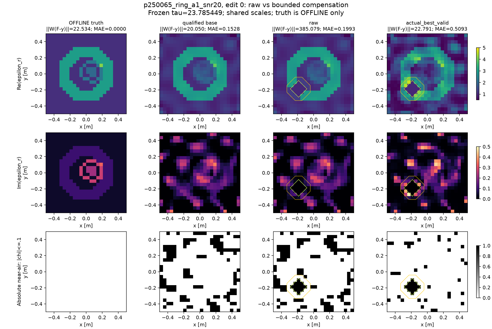

Research T：结构可补偿，成像未改善
同一份二维Maxwell观测允许多个显著不同的合法材料端点。本轮修复基础解、检验严格空气核的非线性补偿，并公开保留材料误差增大的负结果。
通过物理残差，不等于重建正确
原N3平均材料MAE 0.041756；最低残差基础图0.147656；最小改动的合格基础图0.050757。补偿后的候选MAE约0.49–0.51，没有成像改善。概率为null；48个保存端点不是48个已证明独立的拓扑分支。
三轮真实实验
| 实验 | 无补偿 | 补偿后合格 | 结论 |
|---|
| 普通全材料补偿 | 0/16 | 15/16 | 可保住严格空气核与包围材料 |
| 额外保护原有正材料相 | 0/16 | 10/16 | 额外空气减少，但成功率下降 |
| 最小改动合格基础图 | 0/8 | 7/8 | 现象保留，MAE仍无收益 |
同一测量的一个真实见证
p250065_ring：固定有限编辑使残差385.079；有界补偿后22.791，小于原阈值23.785。13个格点的严格空气核与闭合材料guard均保留；材料MAE从基础0.1528变成0.5093。

浏览8条件基础图、40条编辑、散射拟合与全部失败 →
可以交给G什么
8个minimum-change默认base、48份材料/观测/预测/内部场交接包，原24×24 TM后端、共同corrector/validator和独立预算接口。每份ring观测保留9／10／12／9端点，每份weak观测2端点。A17独立增量与G的搜索算法比赛未运行。
交接说明 · 机器可读索引 · 指标JSON · 完整中文报告 · 科学裁决
受限、历史exposed二维scalar TM pilot；无一般三维、posterior或完整覆盖认证。192states、5832complex RHS、213.213秒受控求解wall；GPU0。继续材料质量约束与补偿机制，强IEEE TAP算法贡献证据不足。